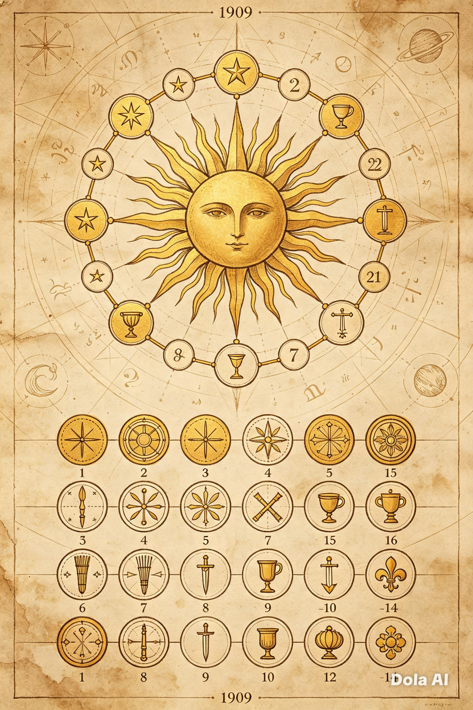

🃏 Major & Minor Arcana: What Each Group Truly Means
A complete traditional Tarot deck consists of exactly 78 cards, divided into two distinct yet deeply connected groups: the Major Arcana and the Minor Arcana. Together they form a complete map of human experience — from universal life lessons to the small details of daily life.

The Major Arcana
These 22 cards represent the grand themes of existence — the milestones, transformations, challenges and truths that shape every human life. Often called the “Greater Secrets,” they tell a complete story: the journey of The Fool as he walks through life, learning lessons from figures like The Magician, The Empress, The Hermit and The World. When a Major Arcana card appears, it signals that something significant is unfolding — a turning point, a deep realization or a shift in your path.
The Minor Arcana
The remaining 56 cards are divided into four suits, each linked to one of the four classical elements — Fire, Water, Air and Earth — and to one specific area of human life:
- 🔥 Wands – Fire: energy, will, passion, ambition, creativity, action and movement. These cards show how you act, what drives you and where your spirit wants to go.
- 💧 Cups – Water: emotions, feelings, relationships, love, intuition and connection. They reveal what lives in your heart, how you relate to others and what truly fulfills you.
- 🌬️ Swords – Air: thoughts, logic, truth, communication, conflict and clarity. They speak of your mind, your words, your beliefs and the challenges that ask you to see things clearly.
- 🌍 Pentacles – Earth: material life, work, money, health, home, skills and stability. They represent what is tangible, practical and built through effort and care.
Each suit also contains numbered cards from Ace to Ten, plus four court cards — Page, Knight, Queen and King — reflecting different stages, personalities and ways of expressing that element’s energy. When you read Tarot, both groups work together: the Major Arcana shows the big picture, while the Minor Arcana shows how it touches your daily reality.